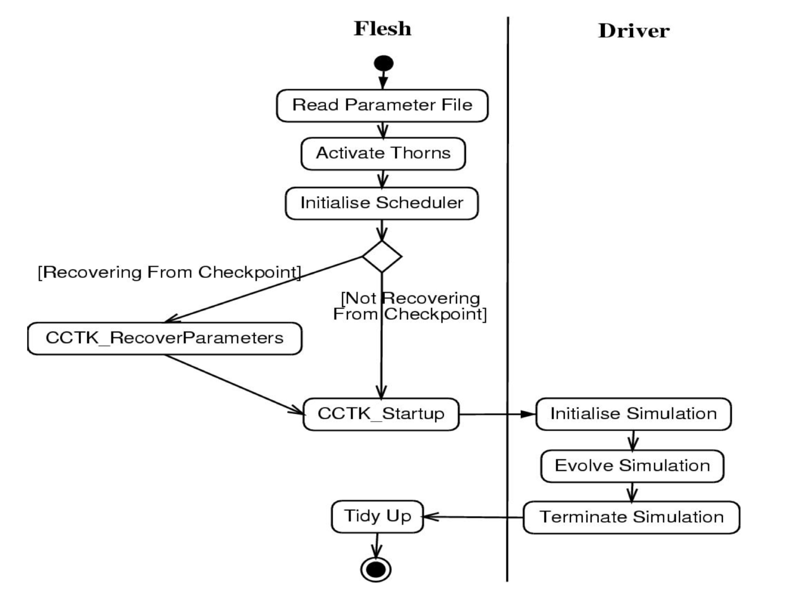

Program Flow

Cactus executables always run from a parameter file, which specifies which thorns to use and sets the values of each thorn’s parameters (the parameters that are not set will take on default values).
There is no restriction on the name of the parameter file, although it is conventional to use the file extension .par.
A parameter file is a text file whose lines are either comments or parameter statements. Comments are blank lines or lines that begin with ‘#’. A parameter statement consists of one or more parameter names, followed by an ‘=’, followed by the value(s) for this (these) parameter(s).
The first parameter statement in any parameter file should set ActiveThorns, which is a special parameter that tells the program which thorns are to be activated. Only parameters from active thorns can be set (and only those routines scheduled by active thorns are run). By default all thorns are inactive.
For example,
1 | ActiveThorns = "CartGrid3D" |
Parameter specifications following ActiveThorns usually are carried out by listing the name of the thorn which defined the parameter, two colons, and the name of the parameter
1 | wavetoyF77::amplitude |
Screen output
As your Cactus executable runs, standard output and standard error are usually written to the screen. Standard output provides you with information about the run, and standard error reports warnings and errors from the flesh and thorns.
As the program runs, the normal output provides the following information:
- Active thorns: This report shows whether the thorn activation was successful, and if successful gives the thorn’s implementation.
- Failed parameters: If any of the parameters in the parameter file does not belong to any of the active thorns, or if the parameter value is not in the allowed range, an error is registered.
For example,
1 2 3 4 5 | Activating thorn idscalarwave...Success -> active implementation idscalarwave # if the parameter is not recognised Unknown parameter time::ddtfac # if the parameter value is not in the allowed range Unable to set keyword CartGrid3D::type - ByMouth not in any active range |
Checkpointing
Checkpointing is defined as saving the current state of a run to a file. At a later time, this run can then be restarted from that state by recovering all the data from the checkpoint file.
Cactus checkpointing and recovery methods are provided by thorns. In general, these thorns decide how often to generate a checkpoint.
Parameter File Syntax
A parameter file (or par file) is used to control the behaviour of a Cactus executable.
A parameter statement is an expression of the form Left-Hand-Side = Right-Hand-Side. The Left-Hand-Side may be a fully qualified parameter name. The Right-Hand-Side is a value.
Values can be any of the following
- Booleans: Booleans are either true (i.e. 1, true, on, "true", or "on") or false (i.e. 0, false, off, "false", or "off").
- Integers: Integers can be positive or negative.
- Real numbers: Real numbers can be positive or negative and may be written with exponents (e.g. 1.0e-3, or -2.94d+10).
- Strings: Sequences of characters delimited by quotes.
- Variables: Parameter values can also contain variables of the form
${VARIABLE}or$ENV{VARIABLE}. - Expressions: Parameters statements of numeric or boolean type can use arithmetic expressions in place of explicit values.
- Array assignments: Arrays of parameters can be set by including an integer expression inside the square brackets following the name, e.g.
thorn::parameters[0]. Optionally, an array of parameters may be set by means of a comma delimited list of values inside square brackets, e.g.thorn::parameters = [4.8, 3.2].

Please see the file par.peg in the directory Cactus/src/piraha/pegs for the full grammar describing the par file.
The parameter file is read sequentially from top to bottom, this means that if you set the value of a parameter twice in the parameter file, the second value will be used.
Note
You can obtain lists of the parameters associated with each thorn using the command-line options.
-O: Prints a full list of all parameters from all thorns which were compiled, along with descriptions and allowed values.
-o: Prints the description and allowed values for a given parameter—takes one argument.
Cactus Application Interfaces
Iterating Over Grid Points
A grid function consists of a multi-dimensional array of grid points. These grid points fall into several types:
- interior: regular grid point, presumably evolved in time
- ghost: inter-process boundary, containing copies of values owned by another process
- physical boundary: outer boundary, presumably defined via a boundary condition
- symmetry boundary: defined via a symmetry, e.g. a reflection symmetry or periodicity
Grid points in the edges and corners may combine several types. For example, a point in a corner may be a ghost point in the x direction, a physical boundary point in the y direction, and a symmetry point in the z direction.
The size of the physical boundary depends on the application. The number of ghost points is defined by the driver; the number of symmetry points is in principle defined by the thorn implementing the respective symmetry condition, but will in general be the same as the number of ghost points to avoid inconsistencies.
Note
When iterating over grid points, one usually needs to know about the boundary sizes and boundary types present.
The flesh provides a set of macros to iterate over particular types of grid points:
- CCTK_LOOP_ALL: Loop over all grid points
- CCTK_LOOP_INT: Loop over all interior grid points
- CCTK_LOOP_BND: Loop over all physical boundary points
- CCTK_LOOP_INTBND: Loop over all “interior” physical boundary points, i.e. over all those physical boundary points that are not also ghost or symmetry points
As described above, points on edges and corners can have several boundary types at once, e.g. can be both a physical and a symmetry point. LOOP_BND and LOOP_INTBND treat these different: LOOP_BND loops over all points that are physical boundaries (independent of whether they also are symmetry or ghost boundaries), while LOOP_INTBND loops over those points that are only physical boundaries (and excludes any points that belongs to a symmetry or ghost boundary). LOOP_BND does not require applying a symmetry condition or synchronisation afterwards (but does not allow taking tangential derivatives); LOOP_INTBND allows taking tangential derivatives (but requires applying symmetry boundaries and synchronising afterwards).
Coordinates
The flesh provides utility routines for registering and querying coordinate information. The flesh does not provide any coordinates itself, these must be supplied by a thorn. Thorns are not required to register coordinates to the flesh, but registering coordinates provides a means for infrastructure thorns to make use of coordinate information.
I/O
To allow flexible I/O, the flesh itself does not provide any output routines, however it provides a mechanism for thorns to register different routines as I/O methods.
Interpolation Operators
The flesh does not provide interpolation routines by itself. Instead, it offers a general function API to thorns, for the registration and invocation of interpolation operators.
Reduction Operators
A reduction operation can be defined as an operation on variables distributed across multiple processor resulting in a single number. Typical reduction operations are: sum, minimum/maximum value, and boolean operations. A typical application is, for example, finding the maximum reduction from processor local error estimates, therefore, making the previous processor local error known to all processors.